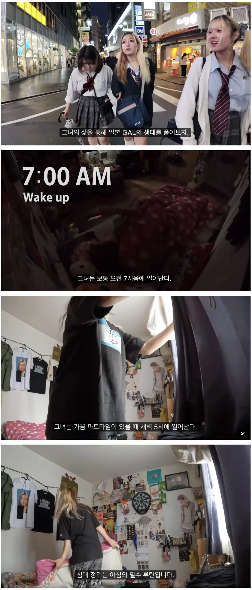

성실함

성실함
그래서 화장 안지우은 친구들도 있지
새벽5시라니 나랑 똑같은 시간에 일어나네
너 갸루야?
왜 보여주다 마는겨
갸루를 용인해주는 직장이 이삿짐센터뿐이라 거기서 힘쓰는 일한다는거 좀 신기하던데
와 그 손톱으로 포장이사가 가능한가 ㅋㅋㅋ
탈부착일듯?
유튜브임? 어디서 보냐
덤프트럭 모는 갸루 본 적 있어
우회전 대기중에 직진하는 덤프 먼저 보내려고 보니까 운전자가 갸루였는데 뒤에 따라가면서 보니까다른건 평범한데 좌우에 등화가 하트모양임 ㅋㅋㅋㅋㅋ 내가 계속 뒤에 따라가니까 중간에 옆에 붙이고 양보해주더라 운전도 약간 상냥했음
엥?
갸루하려면 돈 많이들어서 성실해야함
양키랑 갸루는 또 다름
새벽5시에 일어나는거면 엄청 성실한 사람들인데
성실하네
근면성실한데?
새벽 5시는 대단한데?
나보다 낫네
열심히사네 ㄷㄷ
성실한 청년
갸루화장 기본 시간단위세팅이니까
갸루 하기 힘드네..
개성실하네
불성실한 갸루는 더이상 꾸밀수 없기 때문이다
갸루는 꾸밈인데 그럼 돈많이들어서 성실할수 밖에 없을듯
성실하지 않으면 저 화장 못 해 ㅋㅋㅋ